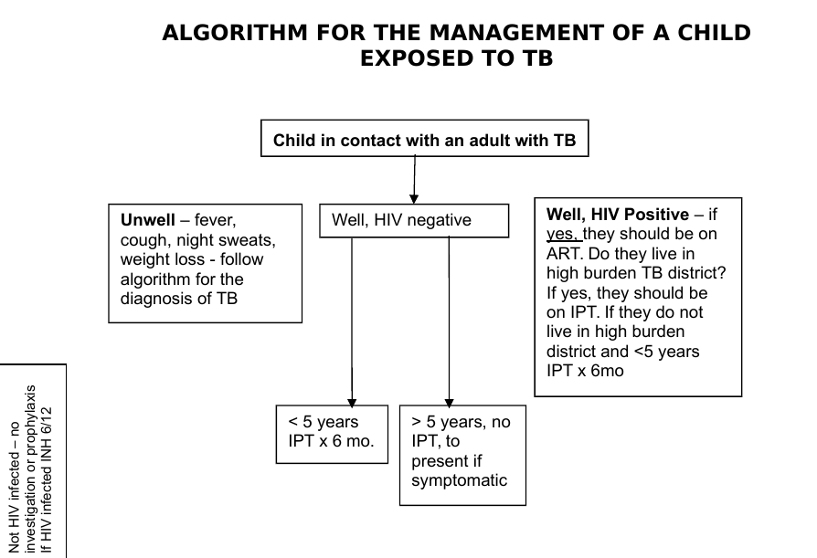

TB Exposed children/neonate and IPT
includes
TB-exposed child

Neonates exposed to an SSP Mother
- A sizeable number of mothers reactivate latent TB infection in the third trimester of
pregnancy or around the time of delivery/immediate post-partum period.
- Any mother in whom TB is suspected should be sent for a CXR and a minimum of x2
sputum samples collected for AFB microscopy.
The following scenarios are a guide on what to do:
Two common scenarios
Mother was diagnosed with TB prior to the third trimester of pregnancy, is
taking TB medications with good adherence and is clinically well:
- Examine the new-born for signs of disease. If the baby is well, no action is required.
- Refer all other household children <5 years of age to the TB clinic for clinical assessment.
Mother is diagnosed with TB in the third trimester of pregnancy or shortly after
delivery
Examine her baby closely for symptoms and signs of disease - two further possible
scenarios
- If the baby is well, commence isoniazid (H) prophylaxis at 10 mg/kg/day and continue
for 6 months. Do not give BCG vaccine.
Isoniazid dose
| Weight band |
Dose of Isoniazid |
| < 2.5 Kg |
25 mg (1/4 tablet) every 24 hours |
| 2.5 -5 kg |
50 mg (1/2 tablet) every 24 hours |
| 5-10kg |
100 mg (1 tablet) every 24 hours |
Infants need to be reviewed at 1, 3 and 6 months after commencing isoniazid. Infants'
weights must be checked regularly and their isoniazid dosages increased as they grow.
Refer all other household children to the TB clinic for clinical assessment and screening. As
BCG is a live vaccine, isoniazid will kill the vaccine and prevent an effective immune
response from developing. If isoniazid is commenced within 2 weeks of receiving BCG
vaccination, the infant will need repeat BCG vaccination following the end of treatment. If no
BCG vaccine was given at birth, then vaccinate the baby two weeks after completing
isoniazid.
The baby is not well and has signs/symptoms suggestive of TB disease, collect
gastric aspirates, send for gene Xpert and culture where possible and commence full
TB treatment.
If any findings suggest active disease, start full anti-TB treatment, according to national
guidelines.
- Breastfeed as normal
- Delay BCG vaccination until 2 weeks after treatment is completed.
- If BCG has already been given, repeat 2 weeks after the end of Isoniazid
treatment.